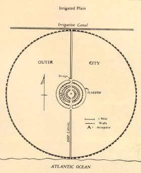
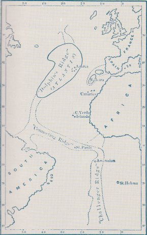
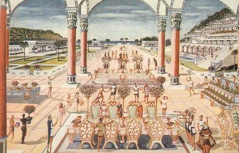

|
The Location of Atlantis new 2-1-05 |
.

A map of Atlantis based on Plato's
writings.

Atlantis's location based on Ignatius
Donnelly's book, Atlantis: The Antediluvian World.

An artist rendition of the Royal Banquet
Hall.
|
Atlantis was explained to be in the shape of a bullseye. Alternating rings of land seperated by the Atlantic. Plato used his dialogues (Timaeus and Critias) to express his thoughts. In these dialogues a powerful empire was said to be located to the west of the Straits of Gibraltar (or what was then noted as the Pillars of Hercules). This Empire was founded by the God of the Sea, Poseidon. Poseidon had 5 children on this island. Atlas, the first born, had the continent and the surrounding ocean named after him. The land was then divided into ten sections to be ruled by each of his sons, and their heirs. The capital of Atlantis was the best of engineering and architecture. This city was made up of walls and canals. In the very center was a hill, and on top of this hill was a temple to the God of the Sea.Inside of the temple was a gold statue of Poseidon driving six winged horses. If you dare to assume that Atlantis exists then the only place that it could be found (my opinion, may differ from other researchers) is near the Azores Island which is just west of the Straight of Gibraltar. However a survey has been conducted in this area showing a blanket of sediment that would have taken millions of years to accumulate. Even though there is no scientific sign of the sunken continent....it's there. Ocassionally someone will try to convince someone interested in Atlantis that it is near New Zealand or Switzerland?.If you find yourself in a situation where a person presents this idea..briskly walk in the opposite direction. If you've done your research on Atlantis you should know the name K.T. Frost. Frost was the first to present the idea that Atlantis may be to the east rather than the west of Straits of Gibraltar. Frost also believed that the destruction of Atlantis came only 900 years before the birth of Plato. So...where...is...Atlantis? If your not confused yet you should be. Ready for the 360 degree turn into a brick wall? Everyone knows the Island of Crete. If you don't...it's a modern part of Greece that lies just a bit south of Athens. If you don't know where Athens is...well...your a lost cause. If we take a trip back in time to about 1500 B.C. you would see the Island of Crete as the seat of the Minoan Empire. I know...I know, I lost you again. During this time period the Minoans were all over the eastern Mediterranean. Minoan Crete was the most sophisticated cultures of this period. Then without warning the Minoans disappeared...like dinosaurs after (insert your preferred theory here). Ten miles north of Crete is Santorina. Many scientists, including myself, believe that a disaster occured here capable of destroyiing the Minoans. Twenty-five hundred years prior to this Santorina was just an island with a volcano, which erupted around 1500 B.C. The eruption was four times as powerful as Krakatoa. Imagine a 400 feet high tsunami, and now picture it landing in your backyard. Hey....wheres your house? Ash would have blackened the sky for 12 days. That tsunami hit Crete and destroyed everything including the Minoans. No castastrophe matches Plato's account of Atlantis than the one I just gave you. Do you accept this theory? Do you have one that puts this one to shame? Do you have more questions? Frank Miller The only theorist with the guts to give you this - frank@theshadowlands.net (I try my best to respond to all questions within a timely fashion. However please use the easy index codes to help sort my e-mail. In your subject line include your reference: (C) = Comment - I read each one, but do to the volumes I can not respond to each one. (Q) = Questions - I respond to each one within days. (H) = Hate mail - Auto deleted (but...thanks) (T) = Theory - Quick response, and the most appreciated.
|